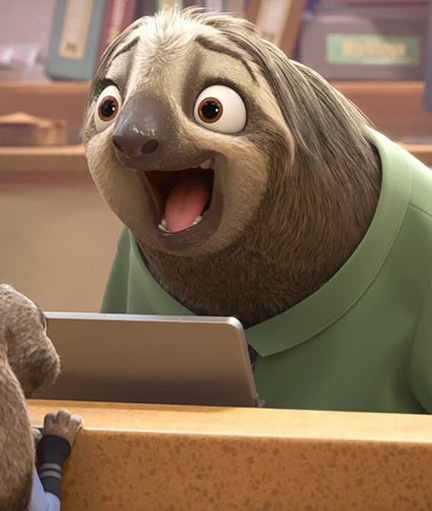

Peresseux
Les paresseux ou aï sont des mammifères arboricoles d'Amérique tropicale qui constituent le sous-ordre des Folivora. Ce sont des animaux de taille moyenne au mode de vie original : ils sont presque toujours suspendus à l'envers dans les arbres et se déplacent avec lenteur. Ils possèdent de longues griffes.

Sueño
Hacen honor a su nombre
El perezoso duerme entre 15 y 20 horas al día.
Peligro de extinción
Pérdida de sus hábitats
La mayoría de las especies de perezosos se encuentra en alguna clasificación de extinción, siendo el pigmeo el más amenazado. Entre sus depredadores principales se encuentran el jaguar, el águila arpía, las serpientes constrictoras y el ocelote.

Su pelaje
De color verde debido a la formación de algas
En su pelo suelen crecer cianobacterias y algas de color verde que aportan ese color a su pelo, permitiéndole pasar desapercibido en distintos parajes. Son capaces de nadar con mucha rapidez cuando no hay puentes que crucen un río o quebrada.